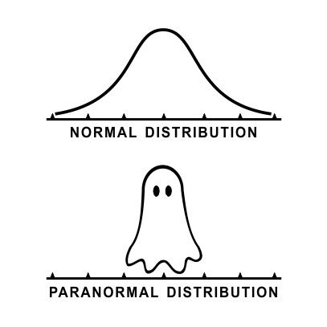

Natural Scene Statistics and Visual Information Fidelity
 Source The Scientist
Source The Scientist
This article is a review of a popular Image Quality Model - Visual Information Fidelity (VIF) [1] which is all based on a statistical model of natural scenes. To do this, we will first review a powerful natural scene statistics (NSS) model, the Gaussian Scale Mixture. Then, we will review some basic information theory and use these tools to derive an image quality model.
Let us begin at the basics. A Random Variable (very informally, a variable that takes a random value) $ X $ is said to be Gaussian or Normal and is denoted by $ X \sim \mathcal{N}(\mu, \sigma^2 )$ if its associated probability distribution function (pdf) is given by $$ f_N(x, \mu, \sigma^2) = \frac{1}{\sqrt{2\pi\sigma^2}} \exp\left(-\frac{(x - \mu)^2}{2\sigma^2}\right).$$
If that does not mean a lot to you, it’s fine. One does not need to know the expression of a hyperbolic paraboloid to enjoy chips out of a Pringles can. The simplest way to think about it is that it a distribution which is centred around a mean value $\mu$ and whose spread (variance) is controlled by $\sigma$. It looks like so.

This definition can be extended naturally to random vectors (RVs), whose distribution is parameterized by a vector $\mu$ and covariance matrix $\Sigma$. This distribution is called a multivariate (because many variables) Gaussian and its pdf in $d$ dimensions is given by $$ f_N(x; \mu, \Sigma, d) = \frac{1}{\sqrt{(2\pi)^d|\Sigma|}} \exp\left(-\frac{1}{2}(x - \mu)^T \Sigma^{-1} (x - \mu))\right) $$
Now that we know what a Gaussian is, we can ‘‘mix’’ Gaussians together. The way we mix Gaussians is by having a set of Gaussian RVs, picking one of them at random and using that RV to generate a sample. In a way, we add a layer of randomness on top of the existing randomness.
Let us call the random variable which tells us which Gaussian RV to pick the mixing variable $ S $. A compact way of expressing the explanation above is to say that given $ S = s $, RV $X$ has the conditional distribution $X|S = s \sim \mathcal{N}(\mu(s), \Sigma(s))$. Then, with a bit of probability magic, we can show that the pdf of the Gaussian Mixture is given by
$$ f(x) = E_S[f_N(x; \mu(s), \Sigma(s), d)] $$
Once again, the actual math is not critical. The intuition here is that we picked Gaussian RVs at random, so the overall distribution is an average of their individual distributions.
The Gaussian Scale Mixture (GSM) is a simplified version of this distribution, where we assume all the Gaussians are centred at the origin, i.e., $ \mu(s) = 0$ and that all covariance matrices are scaled versions of each other, i.e., $\Sigma(s) = s^2 \Sigma$ for some covariance matrix $\Sigma$. That is to say, the components of a GSM only differ by a scaling factor. Interestingly, we can ‘‘decompose’’ the GSM distributed random variable using a positive random variable $S$ and a Gaussian RV $U \sim \mathcal{N}(0, \Sigma)$ as $$ X = S \cdot U $$
While this model is a ‘‘simplification’’ of the Gaussian Mixture Model (GMM), it is powerful a model for natural scenes. This is mainly because unlike a Gaussian, a GSM can represent heavy-tailed distributions, i.e, distributions which decay slowly. In their seminal work [3] showed that wavelet coefficients GSM can be used to model wavelet coefficients of natural images.
At this point, we should clarify and introduce a few notions. First, what are natural images? They are not images of nature. A natural image is an image which has not undergone any distortions, like blur, compression. noise, etc. So, a natural image is one which looks natural.
Second, what are wavelets? Informally, a wavelet is a ‘‘localized’’ wave. That is, while waves (think sinusoids) are periodic and infinite, wavelets are more localized in space (or time). Much like the Heisenberg Uncertainty principle, signals also obey an uncertainty principle. Simply put, a signal cannot have an arbitrary small spread in both space and frequency. So, because a wave has zero spread in frequency (a sinusoid has only one frequency), it has an infinite spread in space. In other words, we say that a sinusoid offers perfect frequency resolution but no spatial resolution.
A wavelet, by being localized in space, allows us to trade off spread in space for spread in frequency, giving us both (limited) spatial and frequency resolution. A wider wavelet has poorer spatial resolution, but better frequency resolution. Because images are two dimensional, there is also a notion of orientation resolution. Isotropic functions (functions which are identical in all directions) offer no orientation selectivity in space while very narrow functions offer high orientation selectivity. The steerable pyramid [3], used in VIF and STRRED [2], provides a set of wavelets which allows for an (overcomplete) multi-scale multi-orientation decomposition of images.
Finally, let us talk about information theory. In my opinion, information theory is the most beautiful offshoot of probability theory. The goal of information theory, as one would guess, is to characterize the amount of information stored in ‘‘sources’’, which are random variables.
The amount of information in, or randomness of, a random variable $ X $ is called its entropy. Mathematically, the (Shannon) entropy of a random variable having a probability mass function $f(x)$ is given by $$ H(X) = -E[\log f(X)] $$
This function satisfies properties that we would expect a randomness measure to satisfy. First, we would like the amount of randomness to always be non-negative, which is true of Shannon Entropy (See Jensen’s Inequality). Second, if a random variable is constant, i.e. $Pr[X = x] = 1$ for some $x$, then it has zero randomness and its entropy is 0. Finally, the uniform distribution has the highest entropy (among all distributions having the same size of support).
Let us now bring in a friend. Let $Y$ be another random variable, which is not independent of $X$ (I said ‘‘friend’'). We can ask the question, “how much information is in $X$ if I already know $Y$”? To answer this quantitatively, we compute the conditional entropy. To calculate this, we first consider the entropy of the conditional distribution of $X$ when we are given each possible of $Y$, i.e., $$H(X | Y = y) = E_{X|Y = y}\left[-\log f(x | Y = y)\right] $$
But we only assumed that we knew $Y$, not that $Y$ took any particular value. So, we average this over all possible values of $Y$ to get the conditional entropy $$ H(X|Y) = E[H(X|Y = y)] $$
Based on entropy and conditional entropy, we define the mutual information (MI) of two random variables $X$ and $Y$ which, as the name suggests, characterizes the amount of information each variable has about the other. The intuition for the mathematical expression for MI is as follows. Let us say that $X$ has information (entropy) $H(X)$. But, if we are given the random variable $Y$, its information content decreases (it will not increase) to $H(X|Y)$. Then, the difference is the amount of information about $X$ that we have obtained from $Y$. So, the MI between $X$ and $Y$ is defined as $$ I(X;Y) = H(X) - H(Y|X) = H(Y) - H(X|Y) $$
Now let us briefly look at its properties. As suggested by the expression, the MI is symmetric, i.e. the MS between $X$ and $Y$ is equal to the MI between $Y$ and $X$. After all, we called it mutual information. Secondly, the MI between two random variables is non-negative. If knowing $Y$ means we know $X$ exactly, $H(X|Y)=0$ (because $X$ is known deterministically, there is no randomness) and the MI is just the information in $X$, i.e. $H(X)$. If $X$ and $Y$ are independent random variables, $H(X|Y) = H(X)$ and the MI is zero, which is what we would expect.
I must confess, I played a little bait and switch routine over the last few paragraphs. I allured you with the promise of continuous random variables (random vectors, even!), but defined these information-theoretic quantities only for discrete distributions. For continuous random variables, we define these quantities in analogous ways, using the pdf instead of the probability mass functions, although some pleasant properties are lost.
We are finally ready to discuss the three information-theoretic quality models in question. Let us begin with VIF. VIF assumes a statistical model of the natural source (the GSM model discussed above), a distortion channel which distorts this ‘‘pristine’’ image, and an additive noise model of the human visual system (HVS). We can illustrate the VIF model as below.
So, in line with our source model, let us define the source random variable as a GSM distributed random vector
$$ C = S \cdot U $$
The distortion channel is described as having a deterministic scalar gain $g$ and an additive White Gaussian Noise (AWGN) $V \sim \mathcal{N}(0, \sigma_v^2 I)$. So, the distorted random variable is given by
$$ D = g \cdot C + V $$
Finally, we model the neural noise of the HVS as an AWGN channel having $N, N’ \sim \mathcal{N}(0, \sigma_n^2)$. The final received pristine and distorted images are given by
$$ E = C + N = S \cdot U + N$$ $$ F = D + N’ = g \cdot S \cdot U + V + N’ $$
We condition all quantities on knowing $S$ because knowing $S$ allows us to predict VIF for our particular pair of reference and test images, instead of a general average case. The intuition here is that upon distortion, lesser information about the source is retained in the distorted image. So, the VIF index is defined as $$ VIF = \frac{I(C; E | S = s)}{I(C; F | S = s)} $$
Conveniently, conditioning on $S$ results in all RVs becoming Gaussians, whose entropies are easy to compute. For an image having $N$ samples of dimension $d$, if the covariance matrix has eigenvalues $ \lambda_j$, the mutual informations can be calculated easily as $$ I(C; E | S = s) = \sum\limits_{i=1}^{N}\sum_{j=1}^{d} \log\left(1 + \frac{s_i^2\lambda_j}{\sigma_n^2}\right) $$ $$ I(C; F | S = s) = \sum\limits_{i=1}^{N}\sum_{j=1}^{d} \log\left(1 + \frac{g_i^2 s_i^2 \lambda_j}{\sigma_v^2 + \sigma_n^2}\right) $$
If you have made it this far, congratulations! You now know what natural scene statistics and information-theoretic quality models look like. We will end by briefly commenting on the implementation details. In practice, both the reference and test images are first transformed into the Wavelet domain using the Steerable Pyramid. The coefficients (which look like filtered images) are collected in 3x3 blocks and modelled as 9-dim vectors $C_i$ and $D_i$ respectively.
What remains is to find the parameters of the GSM distribution and the distortion channel from these wavelet coefficients. The HVS is assumed to have a known channel noise $ \sigma_n^2 = 0.1 $. Because these parameter estimation details are not a part of the core idea behind VIF, I will just state them without proof.
$$ \Sigma = \frac{1}{N} \sum C_i C_i^T $$ $$ s_i = \frac{C_i^T \Sigma^{-1} C_i}{9} $$ $$ g_i = \frac{Cov(C, D)}{Cov(D, D)} $$ $$ \sigma_{v,i}^2 = Cov(D, D) - g_i Cov(C, D)$$
Note that the covariances in the last two equations are scalar covariances calculated in corresponding local neighbourhoods of wavelet coefficients. And there we have it - VIF! Admittedly, this post turned out to be much longer than I had anticipated. But, it is a good thing because I will write about STRRED and SpEED-QA [5] next, which use these same concepts, but differently. So now, even though you may not realize it, you know enough to understand two more information-theoretic quality models.
References
[1] Hamid R. Sheikh and Alan C. Bovik. Image Information and Visual Quality. IEEE Transactions on Image Processing, 2006 Link
[2] Rajiv Soundararajan and Alan C. Bovik, Video quality assessment by reduced reference spatio-temporal entropic differencing. IEEE Transactions on Circuits and Systems for Video Technology, 2013 Link
[3] Martin J. Wainwright and Eero P. Simoncelli. Scale Mixtures of Gaussians and the Statistics of Natural Images. Proceedings of the 12th International Conference on Neural Information Processing Systems. 1999 Link
[4] Eero P. Simoncelli and William T. Freeman. The Steerable Pyramid: A Flexible Architecture For Multi-Scale Derivative Computation. IEEE Conference on Image Processing, 1995 Link
[5] Christos G. Bampis and Praful Gupta and Rajiv Soundararajan and Alan C. Bovik. SpEED-QA: Spatial Efficient Entropic Differencing for Image and Video Quality. IEEE Signal Processing Letters, 2017 Link
Abhinau Kumar
Graduate Student and Research Assistant
My work is focused on estimating and optimizing the subjective quality of images and videos.